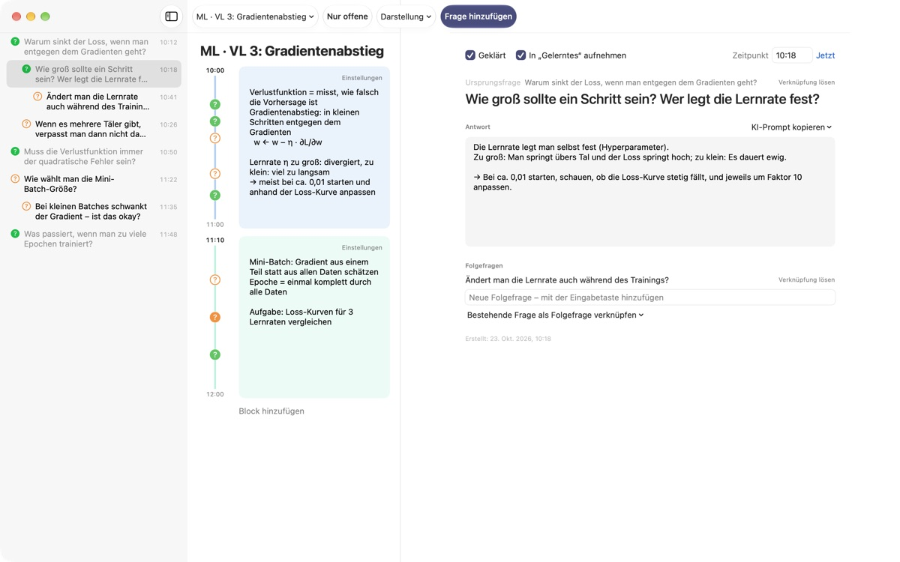
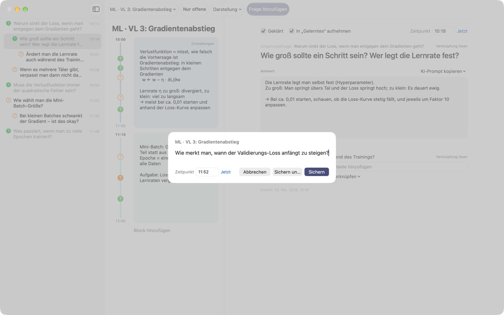
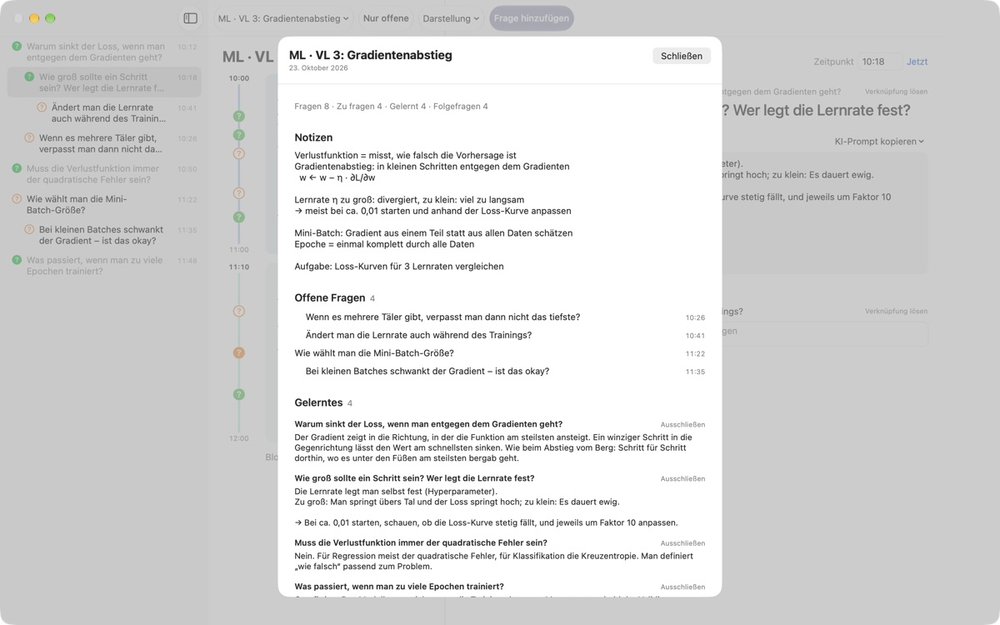
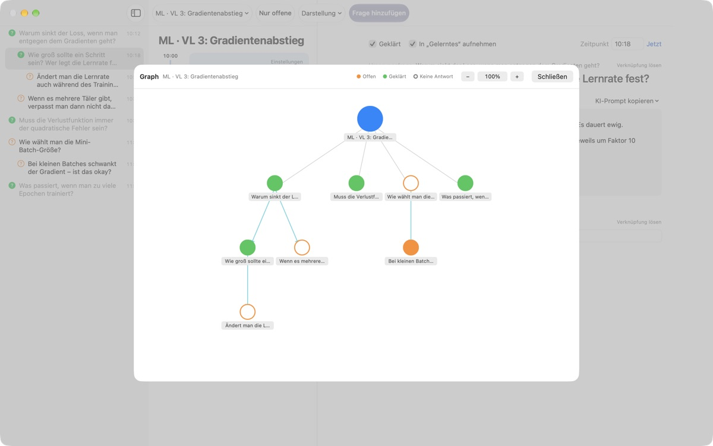

Keine Frage aus der Vorlesung
geht mehr verloren
⌘⇧N drücken, eine Zeile tippen, und die Frage steht neben deinen Notizen genau aus dieser Minute. Du hörst weiter zu und klärst sie später.
Für macOS 14 oder neuer. Kein Konto, alles bleibt auf diesem Mac.

Probier es aus
Du sitzt in einer Vorlesung über maschinelles Lernen. Tipp eine Frage ein und sichere sie: Neben dem Block zu dieser Uhrzeit erscheint ein ?. Stellst du eine Zeit außerhalb der Blöcke ein, entsteht dafür ein neuer Block.
Weißt du nach der Vorlesung noch, was du fragen wolltest?
Kaum denkst du „Moment, warum eigentlich?“, ist die Dozentin schon beim nächsten Punkt. Das Fragezeichen am Rand weiß später nicht mehr, zu welcher Erklärung es gehörte, und bleibt unbeantwortet. LectureQ heftet jede Frage an deine Notizen aus genau diesem Moment und behält sie im Blick, bis du sie geklärt hast.
Fragen, ohne den nächsten Satz zu verpassen
Öffne das Eingabefenster über Frage hinzufügen in der Symbolleiste oder mit ⌘⇧N. Die Uhrzeit wird automatisch eingetragen. Return sichert, ⌘Return sichert und macht gleich Platz für die nächste Frage.
Jede Frage erscheint als ? neben dem passenden Zeitblock. So siehst du später sofort, aus welchem Teil der Vorlesung sie stammt.

Geklärte Fragen werden zu Gelerntem
Schreib die Antwort in deinen eigenen Worten auf und markiere die Frage als geklärt: Schon steht sie in der Übersicht unter Gelerntes. Was noch offen ist, sammelt sich unter Offene Fragen, und deine Liste für die nächste Sitzung entsteht von selbst.KI-Prompt kopieren in den Fragedetails legt einen fertigen Prompt mit Vorlesungstitel und deinen Notizen aus diesem Moment in die Zwischenablage. Einfach in den KI-Dienst einfügen, den du ohnehin nutzt.

Sieh, wohin dein Denken geführt hat
Folgefragen stehen eingerückt unter der Frage, aus der sie entstanden sind, und im Graph verbinden Pfeile sie miteinander. Ein Klick auf einen Knoten führt direkt zur Frage.
Unter Lernstand hältst du fest, wo du gerade stehst, wo du nach dem Kurs sein willst und was du lernen möchtest, und kannst beides vergleichen.

In drei Schritten startklar
- 1
Vorlesung anlegen
Über das Vorlesungsmenü links in der Symbolleiste, oder ein als Markdown gespeichertes Gespräch importieren.
- 2
Festhalten, sobald sie auftaucht
⌘⇧Ndrücken. Eine Zeile reicht, die Uhrzeit steht schon da. - 3
Später beantworten
Antwort aufschreiben und auf das ? klicken. Die Frage wandert zu Gelerntes.
Tastaturkurzbefehle
- ⌘⇧N
- Frage hinzufügen
- Return
- Sichern
- ⌘Return
- Sichern und nächste Frage schreiben
- Esc
- Abbrechen
- ⌘1
- Übersicht: offene Fragen, Gelerntes, Notizen
- ⌘2
- Graph: Ursprungsfragen und ihre Folgefragen
- ⌘3
- Zeitblöcke: alle Blöcke aller Vorlesungen nach Zeit
- ⌘4
- Lernstand
- ⌘+ · ⌘- · ⌘0
- Text größer, kleiner, Standardgröße
Alle Befehle findest du auch im Menü „Darstellung“.
Alle Funktionen sind kostenlos
Kostenlos
- Schnelle Fragen und Zeitblock-Notizen
- Folgefragen und Graph
- Übersicht, Zeitblöcke und Lernstand
- KI-Prompts in fünf Schritten, in die Zwischenablage kopiert
- Gespräche aus Markdown importieren
Entwickler unterstützen
- Bei Gefallen ein kleines Trinkgeld in den Einstellungen geben
- Ein Trinkgeld schaltet nichts zusätzlich frei
Mit oder ohne Trinkgeld funktioniert alles gleich.
Keine Werbung, kein Konto. Deine Notizen bleiben auf diesem Mac.
Häufige Fragen
Was bedeuten die Farben des ?
In der Liste steht ein leerer orangefarbener Kreis für eine offene Frage, ein gefüllter grüner für eine geklärte. Ein Klick auf das ? schaltet um, und mit Nur offene in der Symbolleiste siehst du nur noch ungeklärte Fragen. Neben einem Zeitblock zeigt die Farbe, ob die Frage geklärt ist, und ein gefüllter Kreis, dass schon eine Antwort dasteht.
Wie funktionieren Zeitblöcke?
Mit Block hinzufügen beginnt ein neuer Block in diesem Moment, der vorherige endet dort. Hältst du eine Frage zu einer Zeit fest, die kein Block abdeckt, wird automatisch ein Block darum angelegt. Über Einstellungen oben rechts am Block änderst du Farbe, Beginn und Dauer oder löschst ihn. Hast du einmal selbst einen Block gelöscht, legt diese Vorlesung keine Blöcke mehr automatisch an.
Was ist der Unterschied zwischen „Geklärt“ und „Gelerntes“?
Setzt du in den Fragedetails ein Häkchen bei Geklärt, kannst du außerdem wählen, ob die Frage zu Gelerntes zählt. Dort erscheinen nur geklärte Fragen, die du aufgenommen hast. Auch in der Übersicht kannst du sie herausnehmen oder wieder aufnehmen; die Antwort bleibt dabei erhalten.
Wie funktionieren die KI-Prompts?
Öffne in den Fragedetails KI-Prompt kopieren neben „Antwort“ und wähle einen Schritt: Frage schärfen, Antwort finden, Antwort hinterfragen, Folgefragen herausarbeiten oder Meine Antwort bewerten lassen. Ein Prompt mit Vorlesungstitel, deinen Notizen aus diesem Moment, deinem Lernstand und der Ursprungsfrage landet in der Zwischenablage. Der Prompt-Text selbst ist derzeit auf Koreanisch; die meisten KI-Dienste verstehen ihn trotzdem, und du kannst um eine Antwort auf Deutsch bitten. Für „Meine Antwort bewerten lassen“ muss im Antwortfeld schon deine eigene Antwort stehen. Die App selbst verbindet sich nie mit einem KI-Dienst.
Kann ich ein als Markdown gespeichertes Gespräch importieren?
Wähle Aus Markdown importieren … im Vorlesungsmenü. # Titel wird zum Namen der Vorlesung; in jedem ## Abschnitt ist die erste Frage die Ursprungsfrage, die folgenden sind Folgefragen. Was die zuerst sprechende Person sagt, wird zur Frage, alles von anderen zur Antwort auf die Frage davor. Die Originaldatei bleibt unverändert.
Wie lösche ich eine Frage oder eine Vorlesung?
Klicke in der Liste mit der rechten Maustaste auf die Frage und wähle Löschen. Für eine Vorlesung nimmst du Aktuelle Vorlesung löschen im Vorlesungsmenü; ihre Fragen und Blöcke werden mitgelöscht. Das lässt sich nicht rückgängig machen, sichere Wichtiges also vorher.
Wo werden meine Daten gespeichert, und wie sichere ich sie?
Alles bleibt auf diesem Mac und wird nicht hochgeladen. Zum Sichern beende die App und kopiere den ganzen Ordner ~/Library/Containers/com.lectureq.LectureQ/Data/Library/Application Support/LectureQ/ samt den Dateien -wal und -shm. Die App sendet nur anonyme Nutzungsstatistiken wie App-Version und Nutzungstage, nie deine Inhalte.
Die Schrift ist zu klein.
Mit ⌘+ wird sie größer, mit ⌘- kleiner, mit ⌘0 wieder normal. Möglich sind 85 % bis 200 %, die Einstellung bleibt gespeichert.
Auf welchen Macs läuft die App?
Auf jedem Mac mit macOS 14 oder neuer. Der Quellcode ist auf GitHub unter M1zz/LectureQ öffentlich.
Etwas funktioniert nicht. Wem sage ich Bescheid?
Schick Feedback über die Einstellungen (⌘,) der App oder schreib an die Adresse unten. Mit deiner macOS-Version und einer kurzen Beschreibung, was du gerade gemacht hast, können wir schneller helfen.
Fragen oder Feedback? Schreib an mizzking75@gmail.com.